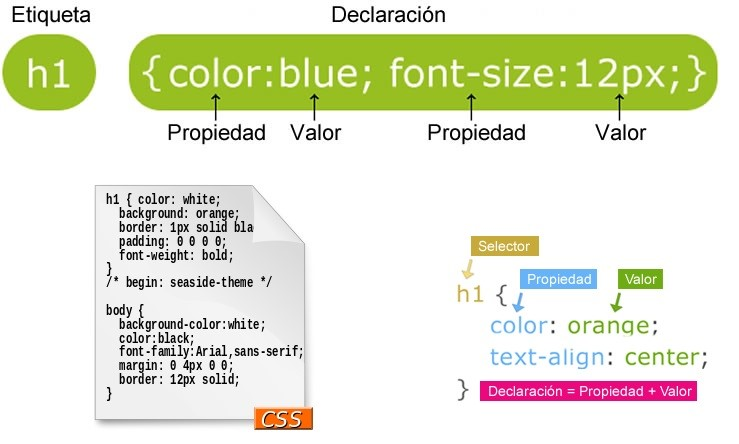

CSS
CONCEPTOS
CSS “Cascade Style Sheets (hojas de estilo en cascada)”,
es un lenguaje que nos permite estandarizar comandos.
En las hojas de estilo CSS podemos crear una serie de comandos que
permiten modificar todos los elementos que concuerden con un
determinado criterio, permitiéndonos desarrollar una página web desde
cero y personalizar cualquier detalle de diseño.
Algunas propiedades:
-
align-content: nos permite alinear los elementos del contenedor a lo largo del eje transversal en flexbox y a lo relativo a la columna en grid.
El valor por defecto es stretch.
-
background: se utiliza para establecer todas las propiedades del fondo en una sola declaración abreviada
-
bottom:Establece la distancia entre el borde inferior de un elemento posicionado ( position:relative | absolute ... ) relativo al borde inferior de la caja padre
-
letter-spacing: Establece el espaciado entre caracteres de texto.
-
font-family: : Indica el nombre (o nombres) del tipo de letra que se va a emplear. Se pueden escribirse varios estilos separados por comas, lo que indica al navegador que, si no existe en la máquina el primer tipo, utilice el segundo, y si tampoco, el tercero, etc. Por ejemplo: font-family:Courier,Verdana,Arial .

|